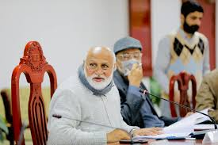

Akhtar has published/edited four books on "Quality Assurance in Higher
Education".He has published research articles in high impact
journals.[dubious – discuss] He served as the Chief Editor of the
Journal of Quality & Innovation (2005-2017) and Member Advisory Board,
Journal of Quality Assurance in Education (Emerald Journal).
